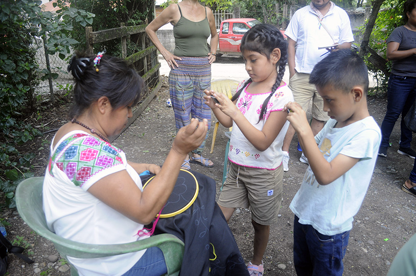

Septiembre y octubre de 2025
Estas fotografías registran una de las sesiones que tuvimos con el colectivo que se organizó en la Huasteca sur, en Tampacán, que, aun siendo un municipio que concentra población nahua, el vocablo es de origen tének, viene de Tam, “lugar” pacan, “matas de maíz dobladas”. En este primer encuentro con mujeres y un varón nahua de la Huasteca sur de San Luis Potosí, se compartieron testimonios personales, respecto a los olvidos en los que han caído la vestimenta y el bordado del pueblo nahua de esta parte del estado. Contaron cómo es que aprendieron a bordar en la infancia, o quienes apenas buscan el aprendizaje con amistades o profesoras. Hablaron de la importancia de recuperar esta parte de su identidad. Una idea común en el colectivo es que el pueblo tének no ha perdido sus vestimentas ni las iconografías de ésta, y por eso destacan en las ferias o eventos a donde son invitados. En esta actividad intergeneracional también participaron infancias que ayudaron en el registro fotográfico de los bordados que compartieron integrantes del colectivo.
Íts’ a septiembre ani octubre ti tamub 2025
Axe’ xi waleklabchik in tejwa’medhal an t’ojláb xi i t’aja k’al an atiklabchik xi i tamkuy ti tsabál tének ti kalel k’icháj, ti bichow Tampacan, xi, pél jún ok’ bichow ju’táj ti k’wajílchik an dhakcham, in bij pél i káw tének, kalel ti káw Tam, “jolataláb” ani pacan “pakladh akanlíl an em”. Ti k’a’al tamkuntaláb k’al an mimlábchik ani jún i inik dhakcham xi k’wajilchik ti pejach tének tsabal ti kalel k’icháj ti tampots’ots’, in tejwa’medhachik a xi jaja’chik in wat’amal, abal yabáts exlab an biyal toltom ani an chukláb in k’ál an dhakcham ti al axe’ xi pejach tsabál ti al an tampots’ots’. In t’ila’chik jant’odh ti in exóbnachik ti chukúl tam ti tsakamej, o jita’chik we’ in exal kin aliy kin exóbna k’al jún i exlowal o exóbchixchik. In uluwchik jayej abal exbadh kin tsáb pena’ axe xi biyal t’ajnél xi pél in k’ál an dhakcham. Ti jun yanel in ko’yalchik an tsalap abal an ténekchik yab in k’ibamal in toltomil ni an chuklábchik, ani jaxtamits lej tejwa’melchik tam t’ajnal an ajibchik o jutakits ju’táj ka kaniatchik. Axe’ axe’ xi t’ojláb xi i t’aja k’al an atiklábchik xi pilchik in tamúb jayétsej in biynachik in tsalapil an tsakamchik xi in tolmiychik kin kaldhanchij an walekláb an chukláb xi in ne’dhachik an mimláb xi tamkun.
Septiembre wan octubre tlen 2025
Ni tlaixkopinkayomej kiixnextiya ipan se tlanechikoli tlen tijpixtoya ika nopa tlasentilistli tlen mosentilijke ipan kuextekapan tlali sur, nepa Tampakaj wan, nojkia se nepanteyowali tlen itstokej nawa masewalmej, tlen inelwayo koxtekatl, walaj tlen Tam, “kakiwili” pacan, “toktli tlen tlakuelpacholi” Ipan ni achtowi tlanechikoli ika siwamej wan se nawatlakatl tlen kuextekapan tlali sur tlen San Luis Potosi, tlen ininjuanti mokamanalwijke, tlen moelkatokaj nopa yoyomitl wan tlajtsontli tlen nawa masewalmej tlen ni tlateyowali. Kiijtojke kenijkatsa kiyekolijke tlajtsonkej kemaj konemej, o kenijkatsa momachtijke ika ininwapoyowa o inin tlamachtikawaj. Ininjuanti kamanaltijke tlen ipatij moixpatiwis tlen inin tlaixneskayo. Se tlanejnewili tlen sansej ipan nopa tlasentilistli tlen koxtekaj masewalmej axkipolojtoke ininyoyo o inin tlaixkopinkayomej tlen ni, wan iyejka monextiya ipan nopa tlanamakilkayotl o tlanechikoli kampa kinnotsa. Nopa konemej nojkia tlapalewijke ipan ni tekitl tlen kichiwa masewalmej tlapalewijke ipan tlaixkopinkayotl nopa tlajtsomali tlen kinmakayaya katli itstoya ipan nopa tlasentilistli.
Septiembre y octubre de 2025
Estas fotografías registran una de las sesiones que tuvimos con el colectivo que se organizó en la Huasteca sur, en Tampacán, que, aun siendo un municipio que concentra población nahua, el vocablo es de origen tének, viene de Tam, “lugar” pacan, “matas de maíz dobladas”. Chiconamel, palabra náhuatl, Chicomeameli, qué significa “lugar de siete pozos”, fue el barrio donde tuvimos otro de los encuentros con este colectivo. Fue una experiencia muy enriquecedora en cuanto al intercambio de saberes entre distintas generaciones. El profesor Miguel Ramírez y Yuridia Lizbeth Francisco de Dios, nuestros anfitriones, invitaron a dos señoras nahuas, a las que llaman “abuelitas” por su edad y sabiduría, para que compartieran sus conocimientos de tiempos pasados. Las dos comentaron que sus blusas bordadas habían sido elaboradas por otras personas. Fue de mucho aprendizaje escuchar a Ángel Hernández González, joven nahua de Mahuajco, municipio de Coxcatlán (zona media de la Huasteca potosina). Él compartió saberes de un pasado lejano y rico que le dejaron sus abuelas. Mostró cómo es la técnica del hilado del algodón, mismo que él siembra y cosecha en su casa. Explicó sobre el telar de cintura, tecnología de la época prehispánica, que mantiene vigente en su casa. Mostró al colectivo las prendas tejidas y bordadas por él mismo.
Íts’ a septiembre ani octubre ti tamub 2025
Axe’ xi waleklabchik in tejwa’medhal an t’ojláb xi i t’aja k’al an atiklabchik xi i tamkuy ti tsabál tének ti kalel k’icháj, ti bichow Tampacan, xi, pél jún ok’ bichow ju’táj ti k’wajílchik an dhakcham, in bij pél i káw tének, kalel ti káw Tam, “jolataláb” ani pacan “pakladh akanlíl an em”. Chiconamel, dhakcham káw, chicomeameli, xi in le’ kin uluw “jolataláb k’al búk i móm”, pél ju’táj ti u tamkun k’al axe’ xi kweneláb. Kalej lej alwa’ an tamkuntaláb kom in wit’achik kin jaluw pilchik an t’ajbiláb xi in exlalchik patal an atiklábchik. An exóbchix Miguel Ramírez ani a Yuridia Lizbeth Francisco de Dios, an atiklábchik xi tu bats’uw, in kaniychik tsáb i mimláb dhakcham, in bijyalakchik ti “tsakam ách” kom yanits i tamub in kwa’alakchik ani yán i exobintaláb in kwa’alchik, abal kin t’ila’akchik in biyal t’ajbilabil. Tsablom in uluwchik abal an chukláb xi in kwa’alakchik tin kotón chukudhak k’al k’e’atchik. Lej i exóbna tam ti i ats’a’ a Ángel Hernández González, jún i kwitól inik dhakcham xi k’wajil ti kwenchal Mahuajco (in tsabálil an tsan tsé’ dhám”), ajidh ti bichow Coxcatlán (in tsabálil an ówlábchik) (in ts’ejélil an tsabál tének ti Tampots’ots’). Jaja’ in t’ila’ an biyal t’ajbiláb xi jilchik k’al i ách. In tejwa’medha jant’odh ti eyendhab an eyendhánel kin dhipa’ an kwi’nim, xi jaja’ in t’ayál ani in penal tin k’imáj. In t’ila jayej an tsajintaláb, jún i t’ojláb xi t’ajamej maj ti biyál, ani jaja’ in aynal kin t’aja’ tin k’imáj. In tejwa’medha an toltom xi in ts’ejkamal ani in chukyamal.
Septiembre wan octubre tlen 2025
Ni tlaixkopinalmej kiijkuilowa ipan se tlanechikoli tlen tijpixkej ika nopa tlanechikoli ipan kuextekapan tlali sur, ipan Tampakaj, tlen nojkia se nepanteyowali kampa tlen kipiya masewalmej tlen nahua, tlen inelwayo koxtekatl, walaj tlen Tam, “kakiwili” pacan, “toktli tlakuelpacholi.” Chiconamel, tlajtoli náhuatl, Chicomeameli, tlen kiijtosneki, “kampa onka chikomej ameli”, eltoya nopa tlalteyowali kampa tijpixke seyok tlanechikoli ika ni tlasentilistli. Eliyaya se tlamantli tlen panok tlawel teyolchikajke ika nopa tlajtolpatlalistli tlen tlaixmatilistli katli teipan walawi ixwiwa. Tlamachtijketl Miguel Ramírez wan Yuridia Lizbeth Francisco de Dios, tlen tojuantij techintlanekej, tlen kintlanejke ome nawa siwamej, tlen kintokaxtiya “inanatsitsin” pampa ya wejweyi wan kipiya miyak tlalnamikilistli, tlen kinmakakej tlen kimati tlaixmatilistli katli wejkakiya. Tlen omej kiijtokej inin blusas tlen tlachijchiwali wan tlajtsomali ika sekinok masewalmej. Tlawel kuali timomachtijke kemaj tijtlakakilijke Ángel Hernández González, telpokatl náhuatl tlen Mahuajco, nepanteyowali tlen koxkatlaj (tlajkotipa tlen kuextekpan tlali). Yaya kinmakak tlaixmatilistli tlen wejkakiya wan tlen tlawel ipati tlen inanamej katli kinkawiltejki. Kinextik kenijkatsa tekiti nopa tlamachijchiwali ika ichkatl, tlen yaya kitokaj wan kipixkaj ipan ichaj. Yaya kiixtomayaya tlen nopa tlajkoyan, tlamantli nextilmej katli yankuik katli nekaj tonali, tlen kipixtok yankuik ipan ichaj. Kinextili nochi tlajtsomali nopa yoyomitl katli ya tlajtsomali wan katli yaya kiijtsonki.